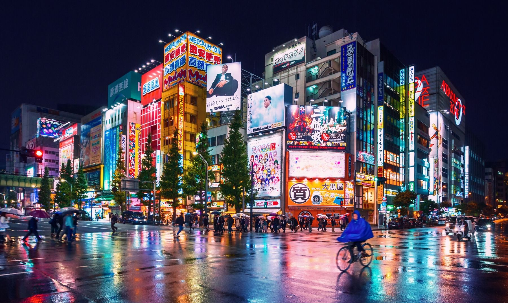

Destinos populares

Tokio
La ciudad más moderna de Japón.

Kioto
Templos, tradición y cultura japonesa.

Osaka
Gastronomía y diversión nocturna.
Organizamos experiencias únicas en Japón: cultura, anime, gastronomía y rutas personalizadas.
La ciudad que nunca duerme.
Tradición y templos históricos.
Gastronomía y entretenimiento.

La ciudad más moderna de Japón.
Templos, tradición y cultura japonesa.
Gastronomía y diversión nocturna.
Organizamos viajes personalizados a Japón con hoteles, rutas turísticas y experiencias únicas.